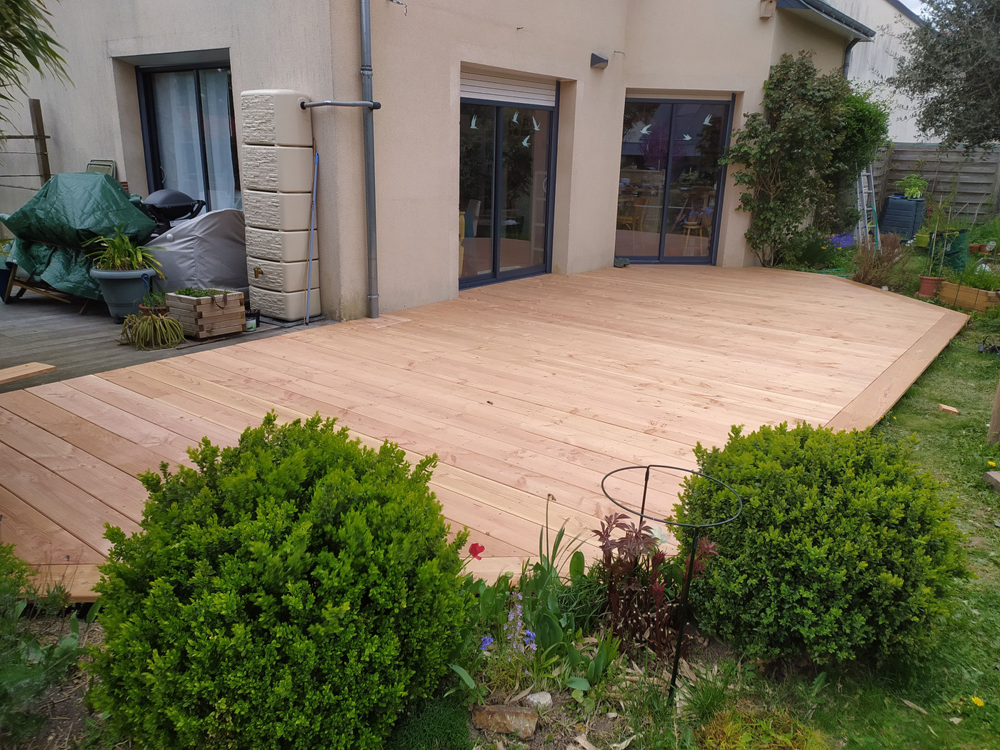
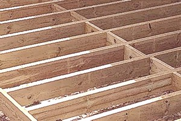
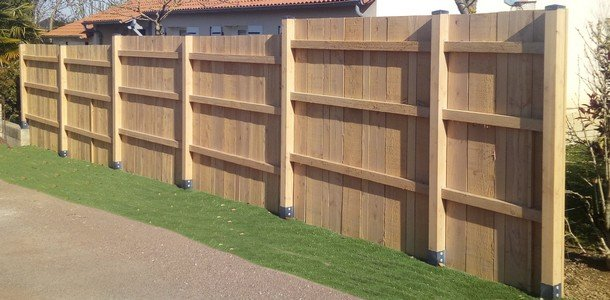
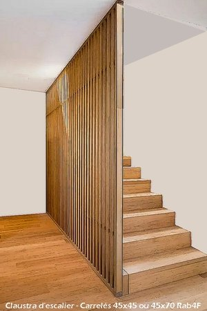
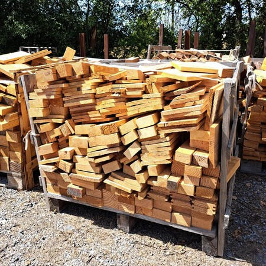

Un séchage naturel
Le Douglas est stocké à l’abri, et les rangs sont séparés par des lattes pour que l’air circule librement.
Le séchage, dans nos conseils


Spécialiste du Douglas depuis 1928, la scierie vous propose du bois sec et naturellement imputrescible, stocké à l’abri pour un usage immédiat. Pour les professionnels comme pour les particuliers.
Les Cinq Routes · Angers 6 kmChoisissez votre chantier : vous y trouverez le bois et les accessoires qu’il vous faut.






Tout ce qu’il vous faut, et juste ce qu’il vous faut ! Cliquez sur un visuel pour voir les produits, avec leurs prix TTC.
Les prix sont affichés, sans demande à faire : en euros TTC, à la pièce, à emporter. Voici quelques sections courantes du Douglas brut.
Sections indicatives, qui peuvent varier selon la durée du stockage.
Du Douglas sec, stocké à l’abri, prêt à l’emploi.
Le Douglas est stocké à l’abri, et les rangs sont séparés par des lattes pour que l’air circule librement.
Le séchage, dans nos conseilsStocké à l’abri : usage immédiat et stabilité.
Douglas, chêne et frêne 100 % issus des forêts de France.
Sec, non traité, classe III, naturel, imputrescible à l’air et prêt à l’emploi.
Trois étapes, et votre devis par mail avant de payer.
Sur le site, avec les prix : j’ajoute mes pièces à « Ma liste ».
Avec le poids et le volume. Je règle par le lien du devis, et la scierie me prévient quand la commande est prête.
Ou un transporteur s’en charge : la scierie ne livre pas, elle indique ses transporteurs partenaires.
Remorque prêtée dès 300 €Si vous avez un attelage, une remorque vous est prêtée gratuitement à partir de 300 € de commande.
Je commence ma listeProduits en stock : vous pouvez aussi venir les chercher directement. Chargement sur place, règlement par carte ou en espèces au bureau, au moins 30 minutes avant la fermeture.
Des terrasses en Douglas : les réalisations de nos clients.
À Saint-Lambert-la-Potherie, aux portes d’Angers.
Les Cinq Routes, 49070 Saint-Lambert-la-Potherie
Par la D56, à 500 m d’Atoll, au croisement des routes de Beaucouzé et de Saint-Lambert-la-Potherie.
Tél. 02 41 48 00 68 · contact@scierie-retif.com